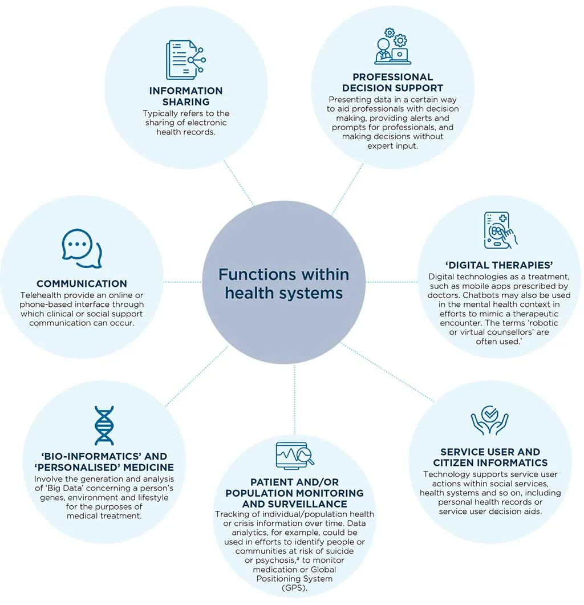

<!DOCTYPE html>
<html lang="en">

<head>
	<meta charset="UTF-8">
	<meta http-equiv="X-UA-Compatible" content="IE=edge">
	<meta name="viewport" content="width=device-width, initial-scale=1">
	<link rel="stylesheet" href="css/style.css">
	<link rel="stylesheet" href="css/responsive.css">
	<link rel="stylesheet" href="css/bootstrap5.css">
	<title>Digital Futures in Mind</title>
</head>

<body>

		<!-- Menu Area -->
<header class="navigation">
	<div class="container menu-bar">
		<div class="navbar-brand"><a href="index.html"></a></div>
		<ul class="navbar">
			<!-- Dropdown-1 -->
			<li>
				<a href="introduction.html">Introduction <span class="dropdown"></span></a>
				<ul>
				  <li><a href="structure.html">0.1 Structure</a></li>
				  <li><a href="how-was-the-report-written.html">0.2 How was the Report Written?</a></li>
				  <li><a href="what-recommendations-does-the-report-make.html">0.3 What Recommendations Does the Report Make?</a></li>
				  <li><a href="a-note-on-terminology.html">0.4 A Note on Terminology</a></li>
				  <li><a href="minding-language-about-mental-health-and-technology.html">0.5 Minding Language about Mental Health and Technology</a></li>
				</ul>
			  </li>
			 <!-- Dropdown-2 -->
			 <li>
				<a href="rising-automation-in-mental-health.html">Rising Automation in Mental Health <span class="dropdown"></span></a>
				<ul>
				  <li><a href="crisis-support-and-mental-health-care.html">1.1 What are the different ways technology is used in crisis support and mental health care?</a></li>
				  <li><a href="benefits-noted-in-research.html">1.2 Benefits Noted in Research</a></li>
				  <li>
					<a href="psychiatric-intervention-and-Other-coercive-measures.html" >1.3 Digitising Involuntary Psychiatric Intervention and Other Coercive Measures <span class="dropdown"></span></a>
					<ul>
					  <li><a href="ai-based-suicide-alerts-and-self-harm-surveillance.html">1.3.1 AI-based Suicide Alerts and Self-harm Surveillance</a></li>
					  <li><a href="digitising-mental-health-law.html">1.3.2 ‘Digitising mental health law’</a></li>
					  <li><a href="power-and-coercion-in-mental-health.html">1.3.3 Power and Coercion in Mental Health</a></li>
					</ul>
				  </li>
				  <li>
					<a href="biometric-monitoring-technologies.html">1.4 Biometric Monitoring Technologies <span class="dropdown"></span></a>
					<ul>
					  <li><a href="biometric-and-digital-turn.html">1.4.1 Power and Justice in the Biometric and Digital Turn</a></li>
					  <li><a href="biometric-monitoring-in-mental-health-settings.html">1.4.2 Governing the Future of Biometric Monitoring in Mental Health Settings</a></li>
					</ul>
				  </li>
				  <li><a href="experience-of-extreme-distress-and-disability.html">1.5 Elevating the Perspective of People with Lived Experience of Extreme Distress and Disability</a></li>
				</ul>
			  </li>
			<!-- Dropdown-3 -->
			  <li>
				<a href="themes-for-public-governance.html">Themes for Public Governance <span class="dropdown"></span></a>
				<ul>
				  <li>
					<a href="privacy.html">2.1 Privacy <span class="dropdown"></span></a>
					<ul >
					  <li><a href="ad-tech-and-predictive-public-health-surveillance.html">2.1.1 Ad-Tech and Predictive Public Health Surveillance</a></li>
					  <li><a href="privacy-and-monetisation-of-sensitive-personal-data.html">2.1.2 Privacy and Monetisation of Sensitive Personal Data</a></li>
					  <li><a href="data-theft-and-data-trafficking.html">2.1.3 Data Theft and Data Trafficking</a></li>
					  <li><a href="privacy-and-discrimination.html">2.1.4 Privacy and Discrimination</a></li>
					  <li><a href="data-protection-law.html">2.1.5 Data Protection Law</a></li>
					  <li><a href="informed-consent.html">2.1.6 Informed Consent</a></li>
					</ul>
				  </li>
				  <li>
					<a href="accountability.html" >2.2 Accountability <span class="dropdown"></span></a>
					<ul >
					  <li><a href="privatisation-and-accountability.html">2.2.1 Privatisation and Accountability</a></li>
					</ul>
				  </li>
				  <li>
					<a href="safety-and-security.html">2.3 Safety and security <span class="dropdown"></span></a>
					<ul >
					  <li><a href="safety.html">2.3.1 Safety</a></li>
						<li><a href="security.html">2.3.2 Security</a></li>
					</ul>
				  </li>
				  <li>
					<a href="non-discrimination-and-equity.html">2.4 Non-Discrimination and Equity <span class="dropdown"></span></a>
					<ul >
					  <li><a href="non-discrimination-and-the-prevention-of-bias.html">2.4.1 Non-discrimination and the Prevention of Bias</a></li>
						<li><a href="fairness.html">2.4.2 Fairness</a></li>
							<li><a href="equality.html">2.4.3 Equality</a></li>
								<li><a href="inclusive-design.html">2.4.4 Inclusive Design – Emancipatory? Participatory?</a></li>
									<li><a href="access-to-technology.html">2.4.5 Access to Technology</a></li>
					</ul>
				  </li>
				  <li>
					<a href="human-control-of-technology.html">2.5 Human control of technology <span class="dropdown"></span></a>
					<ul >
					  <li><a href="human-review-of-automated-decision.html">2.5.1 Human Review of Automated Decision</a></li>
						<li><a href="automated-decision-making.html">2.5.2 Ability to Opt-Out of Automated Decision-Making</a></li>
					</ul>
				  </li>
				  <li>
					<a href="professional-responsibility.html">2.6 Professional responsibility <span class="dropdown"></span></a>
					<ul >
					  <li><a href="multi-disciplinary-and-participatory-collaboration.html">2.6.1 Multi-disciplinary and Participatory Collaboration</a></li>
						<li><a href="scientific-integrity.html">2.6.2 Scientific Integrity and Testing Claims</a></li>
							<li><a href="techno-solutionism.html">2.6.3 Against Hype and ‘Techno-solutionism’</a></li>
								<li><a href="responsible-design.html">2.6.4 Responsible Design, Including Consideration of Long-Term Effects</a></li>
					</ul>
				  </li>
				  <li>
					<a href="transparency-and-explainability.html">2.7 Transparency and explainability <span class="dropdown"></span></a>
					<ul >
					  <li><a href="open-source-data-and-algorithms.html">2.7.1 Open-Source Data and Algorithms</a></li>
						<li><a href="other-issues-of-transparency-and-explainability.html">2.7.2 Other Issues of Transparency and Explainability</a></li>
					</ul>
				  </li>
				  <li>
					<a href="public-interest-and-societal-good.html">2.8 Promotion of Public Interest and Societal Good <span class="dropdown"></span></a>
					<ul >
					  <li><a href="automation.html">2.8.1 Automation, Undermining Face-to-Face Care, and the Risk of Depersonalisation</a></li>
						<li><a href="expanding-the-frame.html">2.8.2 Expanding the Frame from the Individual to the Social</a></li>
					</ul>
				  </li>
				  <li><a href="international-human-rights.html">2.9 International Human Rights</a></li>
				  <li><a href="future-efforts.html">2.10 Future Efforts</a></li>

				</ul>
			  </li>
		</ul>
		<div class="input-box">
			<input type="text" placeholder="" />
			<div class="search">
				
			</div>
			
		</div>
</div>
</header>

<!-- =========Mobile Menu============ -->
<header class="mobile-menu">
	<a href="index.html"></a>
	<input type="checkbox" id="main-nav-check" />
<div id="menu">
<label for="main-nav-check" class="toggle" onclick="" title="Close">&times;</label>
<ul>
	<li><a href="index.html">Home</a></li>
	<li><a href="introduction.html">Introduction</a> <label for="fof" class="toggle-sub" onclick=""><svg height="20" viewBox="0 0 48 48" width="20" xmlns="http://www.w3.org/2000/svg"><path d="M17.17 32.92l9.17-9.17-9.17-9.17 2.83-2.83 12 12-12 12z"/><path d="M0-.25h48v48h-48z" fill="none"/></svg></label>
		<input type="checkbox" id="fof" class="sub-nav-check" />
		<ul id="fof-sub" class="sub-nav">
			<li class="sub-heading">Introduction <label for="fof" class="toggle" onclick="" title="Back"><svg height="20" viewBox="0 0 48 48" width="20" xmlns="http://www.w3.org/2000/svg"><path d="M17.17 32.92l9.17-9.17-9.17-9.17 2.83-2.83 12 12-12 12z"/><path d="M0-.25h48v48h-48z" fill="none"/></svg></label></li>
			<li><a href="structure.html">0.1 Structure</a></li>
			<li><a href="how-was-the-report-written.html">0.2 How was the Report Written?</a></li>
			<li><a href="what-recommendations-does-the-report-make.html">0.3 What Recommendations Does the Report Make?</a></li>
			<li><a href="a-note-on-terminology.html">0.4 A Note on Terminology</a></li>
			<li><a href="minding-language-about-mental-health-and-technology.html">0.5 Minding Language about Mental Health and Technology</a></li>
		</ul>
	</li>
	<li><a href="rising-automation-in-mental-health.html">Rising Automation in Mental Health</a> <label for="fast-apps" class="toggle-sub" onclick=""><svg height="20" viewBox="0 0 48 48" width="20" xmlns="http://www.w3.org/2000/svg"><path d="M17.17 32.92l9.17-9.17-9.17-9.17 2.83-2.83 12 12-12 12z"/><path d="M0-.25h48v48h-48z" fill="none"/></svg></label>
		<input type="checkbox" id="fast-apps" class="sub-nav-check" />
		<ul id="fast-apps-sub" class="sub-nav">
			<li class="sub-heading">Rising Automation in Mental Health <label for="fast-apps" class="toggle" onclick="" title="Back"><svg height="20" viewBox="0 0 48 48" width="20" xmlns="http://www.w3.org/2000/svg"><path d="M17.17 32.92l9.17-9.17-9.17-9.17 2.83-2.83 12 12-12 12z"/><path d="M0-.25h48v48h-48z" fill="none"/></svg></label></li>
			<li><a href="crisis-support-and-mental-health-care.html">1.1 What are the different ways technology is used in crisis support and mental health care?</a></li>
			<li><a href="benefits-noted-in-research.html">1.2 Benefits Noted in Research</a></li>
			<li><a href="psychiatric-intervention-and-Other-coercive-measures.html">1.3 Digitising Involuntary Psychiatric Intervention and Other Coercive Measures</a> <label for="fof-portfolio" class="toggle-sub" onclick=""><svg height="20" viewBox="0 0 48 48" width="20" xmlns="http://www.w3.org/2000/svg"><path d="M17.17 32.92l9.17-9.17-9.17-9.17 2.83-2.83 12 12-12 12z"/><path d="M0-.25h48v48h-48z" fill="none"/></svg></label>
				<input type="checkbox" id="fof-portfolio" class="sub-nav-check" />
				<ul id="fof-portfolio-sub" class="sub-nav">
					<li class="sub-heading">1.3 Digitising Involuntary Psychiatric Intervention and Other Coercive Measures <label for="fof-portfolio" class="toggle" onclick="" title="Back"><svg height="20" viewBox="0 0 48 48" width="20" xmlns="http://www.w3.org/2000/svg"><path d="M17.17 32.92l9.17-9.17-9.17-9.17 2.83-2.83 12 12-12 12z"/><path d="M0-.25h48v48h-48z" fill="none"/></svg></label></li>
					<li><a href="ai-based-suicide-alerts-and-self-harm-surveillance.html">1.3.1 AI-based Suicide Alerts and Self-harm Surveillance</a></li>
					<li><a href="digitising-mental-health-law.html">1.3.2 ‘Digitising mental health law’</a></li>
					<li><a href="power-and-coercion-in-mental-health.html">1.3.3 Power and Coercion in Mental Health</a></li>
				</ul>
			</li>
			<li><a href="biometric-monitoring-technologies.html">1.4 Biometric Monitoring Technologies</a> <label for="fof-services" class="toggle-sub" onclick=""><svg height="20" viewBox="0 0 48 48" width="20" xmlns="http://www.w3.org/2000/svg"><path d="M17.17 32.92l9.17-9.17-9.17-9.17 2.83-2.83 12 12-12 12z"/><path d="M0-.25h48v48h-48z" fill="none"/></svg></label>
				<input type="checkbox" id="fof-services" class="sub-nav-check" />
				<ul id="fof-services-sub" class="sub-nav">
					<li class="sub-heading">1.4 Biometric Monitoring Technologies <label for="fof-services" class="toggle" onclick="" title="Back"><svg height="20" viewBox="0 0 48 48" width="20" xmlns="http://www.w3.org/2000/svg"><path d="M17.17 32.92l9.17-9.17-9.17-9.17 2.83-2.83 12 12-12 12z"/><path d="M0-.25h48v48h-48z" fill="none"/></svg></label></li>
					<li><a href="biometric-and-digital-turn.html">1.4.1 Power and Justice in the Biometric and Digital Turn</a></li>
					<li><a href="biometric-monitoring-in-mental-health-settings.html">1.4.2 Governing the Future of Biometric Monitoring in Mental Health Settings</a></li>
				</ul>
			</li>
			<li><a href="experience-of-extreme-distress-and-disability.html">1.5 Elevating the Perspective of People with Lived Experience of Extreme Distress and Disability</a></li>
		</ul>
	</li>
	<li><a href="themes-for-public-governance.html">Themes for Public Governance</a> <label for="public-apps" class="toggle-sub" onclick=""><svg height="20" viewBox="0 0 48 48" width="20" xmlns="http://www.w3.org/2000/svg"><path d="M17.17 32.92l9.17-9.17-9.17-9.17 2.83-2.83 12 12-12 12z"/><path d="M0-.25h48v48h-48z" fill="none"/></svg></label>
		<input type="checkbox" id="public-apps" class="sub-nav-check" />
		<ul id="public-apps-sub" class="sub-nav">
			<li class="sub-heading">Themes for Public Governance<label for="public-apps" class="toggle" onclick="" title="Back"><svg height="20" viewBox="0 0 48 48" width="20" xmlns="http://www.w3.org/2000/svg"><path d="M17.17 32.92l9.17-9.17-9.17-9.17 2.83-2.83 12 12-12 12z"/><path d="M0-.25h48v48h-48z" fill="none"/></svg></label></li>
			<li><a href="privacy.html">2.1 Privacy</a> <label for="public-portfolio" class="toggle-sub" onclick=""><svg height="20" viewBox="0 0 48 48" width="20" xmlns="http://www.w3.org/2000/svg"><path d="M17.17 32.92l9.17-9.17-9.17-9.17 2.83-2.83 12 12-12 12z"/><path d="M0-.25h48v48h-48z" fill="none"/></svg></label>
				<input type="checkbox" id="public-portfolio" class="sub-nav-check" />
				<ul id="public-portfolio-sub" class="sub-nav">
					<li class="sub-heading">2.1 Privacy <label for="public-portfolio" class="toggle" onclick="" title="Back"><svg height="20" viewBox="0 0 48 48" width="20" xmlns="http://www.w3.org/2000/svg"><path d="M17.17 32.92l9.17-9.17-9.17-9.17 2.83-2.83 12 12-12 12z"/><path d="M0-.25h48v48h-48z" fill="none"/></svg></label></li>
					<li><a href="ad-tech-and-predictive-public-health-surveillance.html">2.1.1 Ad-Tech and Predictive Public Health Surveillance</a></li>
					<li><a href="privacy-and-monetisation-of-sensitive-personal-data.html">2.1.2 Privacy and Monetisation of Sensitive Personal Data</a></li>
					<li><a href="data-theft-and-data-trafficking.html">2.1.3 Data Theft and Data Trafficking</a></li>
					<li><a href="privacy-and-discrimination.html">2.1.4 Privacy and Discrimination</a></li>
					<li><a href="data-protection-law.html">2.1.5 Data Protection Law</a></li>
					<li><a href="informed-consent.html">2.1.6 Informed Consent</a></li>
				</ul>
			</li>
			<li><a href="accountability.html">2.2 Accountability</a> <label for="public-acc" class="toggle-sub" onclick=""><svg height="20" viewBox="0 0 48 48" width="20" xmlns="http://www.w3.org/2000/svg"><path d="M17.17 32.92l9.17-9.17-9.17-9.17 2.83-2.83 12 12-12 12z"/><path d="M0-.25h48v48h-48z" fill="none"/></svg></label>
				<input type="checkbox" id="public-acc" class="sub-nav-check" />
				<ul id="public-acc-sub" class="sub-nav">
					<li class="sub-heading">2.2 Accountability <label for="public-acc" class="toggle" onclick="" title="Back"><svg height="20" viewBox="0 0 48 48" width="20" xmlns="http://www.w3.org/2000/svg"><path d="M17.17 32.92l9.17-9.17-9.17-9.17 2.83-2.83 12 12-12 12z"/><path d="M0-.25h48v48h-48z" fill="none"/></svg></label></li>
					<li><a href="privatisation-and-accountability.html">2.2.1 Privatisation and Accountability</a></li>
				</ul>
			</li>
			<li><a href="safety-and-security.html">2.3 Safety and security</a> <label for="public-Safety-security" class="toggle-sub" onclick=""><svg height="20" viewBox="0 0 48 48" width="20" xmlns="http://www.w3.org/2000/svg"><path d="M17.17 32.92l9.17-9.17-9.17-9.17 2.83-2.83 12 12-12 12z"/><path d="M0-.25h48v48h-48z" fill="none"/></svg></label>
				<input type="checkbox" id="public-Safety-security" class="sub-nav-check" />
				<ul id="public-Safety-security-sub" class="sub-nav">
					<li class="sub-heading">2.2 Accountability <label for="public-Safety-security" class="toggle" onclick="" title="Back"><svg height="20" viewBox="0 0 48 48" width="20" xmlns="http://www.w3.org/2000/svg"><path d="M17.17 32.92l9.17-9.17-9.17-9.17 2.83-2.83 12 12-12 12z"/><path d="M0-.25h48v48h-48z" fill="none"/></svg></label></li>
					<li><a href="safety.html">2.3.1 Safety</a></li>
					<li><a href="security.html">2.3.2 Security</a></li>
				</ul>
			</li>
			<li><a href="non-discrimination-and-equity.html">2.4 Non-Discrimination and Equity</a> <label for="public-equity" class="toggle-sub" onclick=""><svg height="20" viewBox="0 0 48 48" width="20" xmlns="http://www.w3.org/2000/svg"><path d="M17.17 32.92l9.17-9.17-9.17-9.17 2.83-2.83 12 12-12 12z"/><path d="M0-.25h48v48h-48z" fill="none"/></svg></label>
				<input type="checkbox" id="public-equity" class="sub-nav-check" />
				<ul id="public-equity-sub" class="sub-nav">
					<li class="sub-heading">2.4 Non-Discrimination and Equity <label for="public-equity" class="toggle" onclick="" title="Back"><svg height="20" viewBox="0 0 48 48" width="20" xmlns="http://www.w3.org/2000/svg"><path d="M17.17 32.92l9.17-9.17-9.17-9.17 2.83-2.83 12 12-12 12z"/><path d="M0-.25h48v48h-48z" fill="none"/></svg></label></li>
					<li><a href="non-discrimination-and-the-prevention-of-bias.html">2.4.1 Non-discrimination and the Prevention of Bias</a></li>
					<li><a href="fairness.html">2.4.2 Fairness</a></li>
					<li><a href="equality.html">2.4.3 Equality</a></li>
					<li><a href="inclusive-design.html">2.4.4 Inclusive Design – Emancipatory? Participatory?</a></li>
					<li><a href="access-to-technology.html">2.4.5 Access to Technology</a></li>
				</ul>
			</li>

			<li><a href="human-control-of-technology.html">2.5 Human control of technology</a> <label for="public-human" class="toggle-sub" onclick=""><svg height="20" viewBox="0 0 48 48" width="20" xmlns="http://www.w3.org/2000/svg"><path d="M17.17 32.92l9.17-9.17-9.17-9.17 2.83-2.83 12 12-12 12z"/><path d="M0-.25h48v48h-48z" fill="none"/></svg></label>
				<input type="checkbox" id="public-human" class="sub-nav-check" />
				<ul id="public-human-sub" class="sub-nav">
					<li class="sub-heading">2.5 Human control of technology <label for="public-human" class="toggle" onclick="" title="Back"><svg height="20" viewBox="0 0 48 48" width="20" xmlns="http://www.w3.org/2000/svg"><path d="M17.17 32.92l9.17-9.17-9.17-9.17 2.83-2.83 12 12-12 12z"/><path d="M0-.25h48v48h-48z" fill="none"/></svg></label></li>
					<li><a href="human-review-of-automated-decision.html">2.5.1 Human Review of Automated Decision</a></li>
					<li><a href="automated-decision-making.html">2.5.2 Ability to Opt-Out of Automated Decision-Making</a></li>
				</ul>
			</li>
			<li><a href="professional-responsibility.html">2.6 Professional responsibility</a> <label for="public-profess" class="toggle-sub" onclick=""><svg height="20" viewBox="0 0 48 48" width="20" xmlns="http://www.w3.org/2000/svg"><path d="M17.17 32.92l9.17-9.17-9.17-9.17 2.83-2.83 12 12-12 12z"/><path d="M0-.25h48v48h-48z" fill="none"/></svg></label>
				<input type="checkbox" id="public-profess" class="sub-nav-check" />
				<ul id="public-profess-sub" class="sub-nav">
					<li class="sub-heading">>2.6 Professional responsibility <label for="public-profess" class="toggle" onclick="" title="Back"><svg height="20" viewBox="0 0 48 48" width="20" xmlns="http://www.w3.org/2000/svg"><path d="M17.17 32.92l9.17-9.17-9.17-9.17 2.83-2.83 12 12-12 12z"/><path d="M0-.25h48v48h-48z" fill="none"/></svg></label></li>
					<li><a href="multi-disciplinary-and-participatory-collaboration.html">2.6.1 Multi-disciplinary and Participatory Collaboration</a></li>
					<li><a href="scientific-integrity.html">2.6.2 Scientific Integrity and Testing Claims</a></li>
					<li><a href="techno-solutionism.html">2.6.3 Against Hype and ‘Techno-solutionism’</a></li>
					<li><a href="responsible-design.html">2.6.4 Responsible Design, Including Consideration of Long-Term Effects</a></li>
				</ul>
			</li>
			<li><a href="transparency-and-explainability.html">2.7 Transparency and explainability</a> <label for="public-trans" class="toggle-sub" onclick=""><svg height="20" viewBox="0 0 48 48" width="20" xmlns="http://www.w3.org/2000/svg"><path d="M17.17 32.92l9.17-9.17-9.17-9.17 2.83-2.83 12 12-12 12z"/><path d="M0-.25h48v48h-48z" fill="none"/></svg></label>
				<input type="checkbox" id="public-trans" class="sub-nav-check" />
				<ul id="public-trans-sub" class="sub-nav">
					<li class="sub-heading">2.7 Transparency and explainability <label for="public-trans" class="toggle" onclick="" title="Back"><svg height="20" viewBox="0 0 48 48" width="20" xmlns="http://www.w3.org/2000/svg"><path d="M17.17 32.92l9.17-9.17-9.17-9.17 2.83-2.83 12 12-12 12z"/><path d="M0-.25h48v48h-48z" fill="none"/></svg></label></li>
					<li><a href="open-source-data-and-algorithms.html">2.7.1 Open-Source Data and Algorithms</a></li>
					<li><a href="other-issues-of-transparency-and-explainability.html">2.7.2 Other Issues of Transparency and Explainability</a></li>
				</ul>
			</li>
			<li><a href="public-interest-and-societal-good.html">2.8 Promotion of Public Interest and Societal Good</a> <label for="public-promo" class="toggle-sub" onclick=""><svg height="20" viewBox="0 0 48 48" width="20" xmlns="http://www.w3.org/2000/svg"><path d="M17.17 32.92l9.17-9.17-9.17-9.17 2.83-2.83 12 12-12 12z"/><path d="M0-.25h48v48h-48z" fill="none"/></svg></label>
				<input type="checkbox" id="public-promo" class="sub-nav-check" />
				<ul id="public-promo-sub" class="sub-nav">
					<li class="sub-heading">2.8 Promotion of Public Interest and Societal Good <label for="public-promo" class="toggle" onclick="" title="Back"><svg height="20" viewBox="0 0 48 48" width="20" xmlns="http://www.w3.org/2000/svg"><path d="M17.17 32.92l9.17-9.17-9.17-9.17 2.83-2.83 12 12-12 12z"/><path d="M0-.25h48v48h-48z" fill="none"/></svg></label></li>
					<li><a href="automation.html">2.8.1 Automation, Undermining Face-to-Face Care, and the Risk of Depersonalisation</a></li>
					<li><a href="expanding-the-frame.html">2.8.2 Expanding the Frame from the Individual to the Social</a></li>
				</ul>
			</li>
			<li><a href="international-human-rights.html">2.9 International Human Rights</a></li>
			<li><a href="future-efforts.html">2.10 Future Efforts</a></li>
		</ul>
	</li>

</ul>
<div class="input-box">
	<input type="text" placeholder="" />
	<div class="search">
		
	</div>
	
</div>
</div>
<div id="header">
	<label for="main-nav-check" class="toggle" onclick="" title="Menu">&#x2261;</label>
</div><!-- closing "#header" -->
</header>
	<!-- Content Area -->
	<div class="container">
		<div class="row">
			<main>
				<aside class="col-lg-3 col-12 sidebar-left">
					<ol>
						<li>
							<a href="about.html">About</a>
						</li>
						<li>
							<a href="foreword.html">Foreword</a>
						</li>
						<li>
							<a href="introduction.html">Introduction</a>
						</li>
						<li>
							<a href="recommendations.html">Recommendations</a>
						</li>
						<li>
							<a href="note-on-terminology.html">A note on Terminology</a>
						</li>
						<li>
							<a href="rising-automation-in-mental-health.html"  class="active">Rising Automation in Mental Health</a>
						</li>
						<li>
							<a href="digitising-involuntary-psychiatric-intervention.html">digitising Involuntary Psychiatric Intervention</a>
						</li>
						<li>
							<a href="biometric-monitoring-technologies.html">Biometric Monitoring Technologies</a>
						</li>
						<li>
							<a href="distress-and-disability.html">Elevating the Perspective of People with Lived Experience of Extreme Distress and Disability</a>
						</li>
						<li>
							<a href="themes-for-public-governance.html">Themes for Public Governance</a>
						</li>
						<li>
							<a href="conclusion.html">Conclusion</a>
						</li>
					</ol>
				</aside>
				<section class="col-lg-6 col-12 sidebar-middle">
					<div class="content-pane1">
						<h2 id="rising-automation-in-mental-health">Part 1 - Rising Automation in Mental Health</h2>
						<p>Although ‘mental health’ is often presented as a purely technical or clinical issue, it is
							highly political. Controversies abound, including over the language used to describe
							the issue,<sup>25</sup> the experts who should respond to it,<sup>26</sup> the distribution of resources to help
							those in need,<sup>27</sup> the use of forced psychiatric intervention by the state and other forced
							interventions in the name of care,<sup>28</sup> the expansion of psychiatric and psychological ideas
							to public understandings of human distress and wellbeing,<sup>29</sup> and the socio-political
							conditions that contribute to profound distress and mental health crises,<sup>30</sup> to name a
							few contested issues. It is in these political, regulatory, and epistemic struggles that new
							‘digital mental health technologies’ appear.</p>
						<p> According to prominent reports, algorithmic and data-driven technology is expanding
							rapidly in mental health settings. Prominent mental health practitioners and professional
							associations present algorithmic and data-driven technologies as a way to address the
							‘global mental health treatment gap’.<sup>31</sup> It can bring about ‘radical change’, some argue,
							with the potential for ‘scalability’ of interventions and unconstrained reach that ‘can help
							reach billions of people.’<sup>32</sup></p>
						<p> Several governments have embraced digital technologies in mental healthcare as a
							cost-effective, accessible alternative or supplement to face-to-face support. In 2017 in
							the United Kingdom (UK), for example, former Prime Minister Theresa May announced
							‘a £67.7million digital mental health package.’<sup>33</sup> In the US between 2009-2015, the
							National Institute of Mental Health funded $445 million worth of projects concerned with
							‘technology-enhanced mental health interventions’.<sup>34</sup></p>
						<p>Market interests also play a major role in advancing the proposed digital turn in mental health.</p>
						
						<p><i>Thoughtforms by Dr Kellyann Geurts and Dr Indae Hwang in Science Gallery Melbourne’s MENTAL.
								Photo by Alan Weedon</i></p>
						
						<div class="icon-area">
							<div class="icon-box">
								<div class="icon-img"></div>
								<div class="icon-desc">
									<h3>Global digital health market [US]$118 billion worldwide</h3>
									A White Paper published by the World Economic Forum states that: The
									global digital health market has been valued at [US]$118 billion worldwide, with
									mental health being one of the fastest-growing sectors.
								</div>
							</div>
							<div class="icon-box">
								<div class="icon-img"></div>
								<div class="icon-desc">
									<h3>US$1.8 billion in venture-capital funding in 2020</h3>
									Businesses in “digital behavioural health” reportedly raised $1.8 billion in
									venture-capital funding in 2020, compared to $609 million in 2019.<sup>35</sup>
								</div>
							</div>
							<div class="icon-box">
								<div class="icon-img"></div>
								<div class="icon-desc">
									<h3>Gobal mental health software market: US$4,585m by 2027</h3>
									According to market speculators, Zion Market Research, the ‘[g]lobal mental
									health software market [is] expected to generate revenue of around US$4,585
									million by end of 2026.<sup>36</sup>
								</div>
							</div>
							<div class="icon-box">
								<div class="icon-img"></div>
								<div class="icon-desc">
									<h3>Global digital health market expected to reach US$660 by 2026</h3>
									This growth is mirrored in the ‘global digital health market’ more broadly, which
									Statista.com suggests will increase to around US$660 billion dollars by 2026.
								</div>
							</div>
							<div class="icon-box">
								<div class="icon-img"></div>
								<div class="icon-desc">
									<h3>10,000+ mental health apps</h3>
									Over 10,000 apps concerned with mental health are now available for
									download and use.<sup>37</sup>
								</div>
							</div>
						</div>
						<p>Major technology corporations – who happen to be also the largest corporations in the
							world – have increasingly turned their attention to healthcare activity, with each major
							firm now appointing chief medical officers and a large staff of physicians and clinicians.
							This financial activity concerns not just the monetisation of data concerning mental health
							and the expansion of mental health services online—but also in related areas concerning
							‘wellness’, digitised social and health care, emotion and affect recognition, and so on.</p>
						<p>The scale of activity across government and industry is reflected in an expanding body
							of research, much of which occurs at the intersection of commercial activity and scientific
							knowledge-making. Lines of accountability across these clinical and commercial domains
							are not yet clearly defined.<sup>38</sup></p>
						<p>Hence, caution is required in interpreting the global picture of digitised mental healthcare.
							There at least four reasons for this. First, speculated market value is precisely that—
							speculated. And those doing the speculating often have vested interests. Examples
							include technology developers wishing to attract capital, technology vendors seeking to
							sell products, and corporate services wishing to garner government contracts to build and
							deliver technological services. Narratives play a strong role in speculative bubbles around
							new technologies,39 and there are many who stand to gain by painting a picture of a rapid
							and inevitable technological expansion in mental health services and elsewhere. This hype
							can even be fuelled by humanities scholars who repeat sensational claims about technical
							feasibility to attract research funding.<sup>40</sup>></p>
						<p>Second, governments investing in ‘emerging technologies’ that are often described in
							terms of their groundbreaking and revolutionary potential, stand to gain from appearing
							innovative. Narratives of innovation can be misused in mental health sectors that are
							commonly painted as broken and crisis-ridden. Innovation-speak may distract from
							longstanding problems with existing mental health policies and practices and the potential
							need for major investment or restructuring to fix them.41 Narratives of technological
							innovation may also detract from broader policies that are toxic to public mental health,
							such as rising inequality, poor housing, unemployment or employment precarity, pollution
							and lack of green space. We discuss over-simplified narratives of technological problemsolving later in the report (page 77).</p>
						<p>Third, many of the technological claims being made about algorithmic and data-driven
							technologies in mental healthcare are promissory – that is, they haven’t been proven.
							They lack robust evidence to back them up, particularly to show how they work in applied
							and real-world settings. In one of the largest surveys of the field, the James Lind Alliance
							concluded that ‘the evidence base for digital mental health interventions, including the
							demonstration of clinical effectiveness and cost effectiveness in real-world settings,
							remains inadequate’.<sup>42</sup> Despite this sober finding, and others like it, the flurry of market,
							government and research activity may falsely suggest an inevitable march of progress
							toward highly effective and widely adopted digital tools</p>
						<p>Finally, as we will discuss shortly, the very people who are supposed to gain from these
							technological developments – namely, people with lived experience and psychosocial
							disabilities – are concerningly absent from much of the research and discussion on these
							topics.<sup>43</sup> Where input from this (diverse) group has been sought for mainstream research
							or where members of this group have led commentary, the general response appears
							to be one of ambivalence, with support in some areas through to serious concern in
							others—though by no means an outright rejection (page 37). As we stress throughout
							the report, the concerns they raise are not to dismiss the aspirations of those wishing to
							use technologies in good faith efforts to improve care, and nor is it to uncritically reject
							technology as necessarily bad or a sure path to a dystopian future. Instead, we aim to
							express concerns as clearly as possible and promote a sober view of the role of computer
							technology, with its capacity to simultaneously enable and threaten.</p>
							
					</div>
					<div class="content-pane2">
						<h2 id="crisis-support-and-mental-health-care">1.1 What are the different ways technology is used in crisis support and mental health care?</h2>
						<p>There are various uses for algorithmic and data-driven technology in the direct provision
							of mental health care. All are bound up in the contemporary communications eco-system
							of smartphones, linked devices, and the massive flows of data they enable. Functions
							within health systems include:</p>
						<p></p>
						
						<p> These categories are framed in terms of healthcare systems. There may be good
							reasons to advance other ways of categorising. For example, technologies that analyse
							data concerning mental health are appearing outside healthcare services; for example,
							in criminal justice agencies, online advertising firms, insurance companies, education
							settings, employer hiring practices, and so on.<sup>44</sup> Case studies throughout the report will
							illustrate this expansion</p>
						<p>Some technologies are well-established. Others are exploratory or experimental.
							Navigating these expanding technologies, including distinguishing which technologies are
							widely used, which are experimental, which ones are even technically feasible, and which
							ones are merely sensational and unrealistic, is not always easy. However, certain social,
							ethical, legal, political and economic themes tend to recur across the range of technology
							types and the conditions of their usage</p>
					</div>
					<div class="content-pane2">
						<h2 id="benefits-noted-in-research">1.2 Benefits Noted in Research</h2>
						<p>There are several benefits of digital initiatives in the mental health context that are broadly
							discussed in academic and ‘grey’ literature:</p>
						<div class="benifit-box">
							<ul>
								<li>Teletherapy, including web-based and other informational communication technology-based forms of support can <strong>break down geographical barriers</strong> and provide effective
									support to people in distress across large distances, or for those who require or prefer
									remote support.<sup>45</sup> Hannah Zeavin highlights the way ‘care may take unexpected forms
									through technologies, enabling distanced intimacy and social change that transcends the
									psychology of the individual’.<sup>46</sup></li>
								<li>In some cases, online mental health initiatives can <strong>facilitate confidential and anonymous
										help-seeking</strong> that is a clear social good. This might be extremely important for certain
									groups, particularly those from small or marginalised communities, for example, people
									in remote or rural communities, LGBTIQ+ young people, and Indigenous people who
									are wary of sharing personal information with state-based services,47 as well as those
									who may benefit from accessible, digitally facilitated support, including women facing
									intimate-partner and family violence, or those in sociodemographic groups who may be
									reluctant to seek traditional forms of care and support</li>
								<li>There are free web-based programs, some of which may help people to deal with their
									distress, or identify, name, and better understand their experiences, which can provide a
									<strong>quick, inexpensive and accessible resource</strong> for those with access to the internet.<sup>48</sup>
								</li>
								<li>Various kinds of digital technology can help <strong>improve the availability of quality information</strong>
									to help develop awareness of relevant forms of support. This may include formal services,
									but also services and organisations outside mental health systems that may be helpful, such
									as sexual assault services, financial counseling, environmental disaster relief, and informal
									peer-run support groups for people experiencing distress or addiction. There are examples
									of community-driven resources, such as online family violence resources and crisis support,
									created by members of specific cultural communities that are designed to respect their
									concerns around privacy and cultural respect, while meeting their unique needs.<sup>49</sup></li>
								<li>There is also a positive role for data-driven digital technologies in the monitoring of
									services, and collection of vital statistics,<strong> including by civil society </strong>monitoring bodies,
									regulators, health system co-ordinators, managers and advocates. (For examples, page 87)</li>
							</ul>

						</div>
						
						<p>These are just some of the benefits advanced in the scholarly literature. Some clinically
							oriented research institutes espouse the benefits of digital forms of mental health care
							in addressing ‘serious access gaps [to mental health-related] education, prevention and
							treatment services’.50 We will elaborate on some of these apparent benefits throughout
							the report, while also attending the risks, challenges, issues, and so on, that may run
							counter to this optimistic picture of digitally-enabled support.</p>
						<p></p>
						<p><i>Photo by Efe Kurnaz on Unsplash.</i></p>
						<div class="sm-txt">
							<ul>
								<li>25 Anne Cooke and Peter Kinderman, ‘But What about Real Mental Illnesses?” Alternatives to the Disease Model Approach to “schizophrenia’
									(2018) 58(1) Journal of humanistic psychology 47.</li>
								<li>26 Indigo Daya, Bridget Hamilton and Cath Roper, ‘Authentic Engagement: A Conceptual Model for Welcoming Diverse and Challenging
									Consumer and Survivor Views in Mental Health Research, Policy, and Practice’ (2020) 29(2) International journal of mental health nursing 299.</li>
								<li>27 Dainius Pūras and Piers Gooding, ‘Mental Health and Human Rights in the 21st Century’ (2019) 18(1) World Psychiatry 42.</li>
								<li>28 Dinah Miller and Annette Hanson, Committed: The Battle over Involuntary Psychiatric Care (John Hopkins University Press Baltimore, 2016).</li>
								<li>29 Nikolas Rose, Our Psychiatric Future (John Wiley & Sons, 2018).</li>
								<li>30 Nikolas Rose et al, ‘The Social Underpinnings of Mental Distress in the Time of COVID-19 – Time for Urgent Action’ (2020) 5 Wellcome Open
									Research <a href="https://www.ncbi.nlm.nih.gov/pmc/articles/PMC7411522/">https://www.ncbi.nlm.nih.gov/pmc/articles/PMC7411522/</a></li>
								<li>31 Vikram Patel et al, ‘The Lancet Commission on Global Mental Health and Sustainable Development’ (2018) 392(10157) The Lancet 1553.</li>
								<li>32 Dinesh Bhugra et al, ‘The WPA-Lancet Psychiatry Commission on the Future of Psychiatry’ (2017) 4(10) The Lancet Psychiatry 775, p.803.</li>
								<li>33 HM Government, ‘Prime Minister Unveils Plans to Transform Mental Health Support’, GOV.UK (9 January 2017)
									<a href="https://www.gov.uk/government/news/prime-minister-unveils-plans-to-transform-mental-health-support">https://www.gov.uk/government/news/prime-minister-unveils-plans-to-transform-mental-health-support</a>
								</li>
								<li>34 National Institute of Mental Health, ‘NIMH » Technology and the Future of Mental Health Treatment’ (2017) </li>
							<li>35 Molly Fischer, ‘The Therapy-App Fantasy’, The Cut (29 March 2021) <a href="https://www.thecut.com/article/mental-health-therapy-apps.html">https://www.thecut.com/article/mental-health-therapy-apps.html</a>
								World Economic Forum in collaboration with Accenture, Empowering 8 Billion Minds: Enabling Better Mental Health for All via the Ethical Adoption
								of Technologies (28 October 2019) <a href="https://nam.edu/empowering-8-billion-minds-enabling-better-mental-health-for-all-via-the-ethical-adoption-of-technologies">https://nam.edu/empowering-8-billion-minds-enabling-better-mental-health-for-all-via-the-ethical-adoption-of-technologies</a>.</li>
							<li>36 Zion Market Research, ‘Free Analysis: Mental Health Software Market’, Zion Market Research (2 January 2019)
								<a href="https://www.zionmarketresearch.com/market-analysis/mental-health-software-market">https://www.zionmarketresearch.com/market-analysis/mental-health-software-market</a>
							</li>
							<li>37 Jennifer Nicholas et al, ‘Mobile Apps for Bipolar Disorder: A Systematic Review of Features and Content Quality’ (2015) 17(8) Journal of
								Medical Internet Research e198.</li>
							<li>38 Nicole Martinez-Martin and Karola Kreitmair, ‘Ethical Issues for Direct-to-Consumer Digital Psychotherapy Apps: Addressing
								Accountability, Data Protection, and Consent’ (2018) 5(2) JMIR Mental Health e9423.</li>
							<li>39 Brent Goldfarb and David A Kirsch, Bubbles and Crashes: The Boom and Bust of Technological Innovation (Stanford University Press, 2019).</li>
							<li>40 Lee Vinsel, ‘You’re Doing It Wrong: Notes on Criticism and Technology Hype’, Medium (1 February 2021)
								<a href="https://sts-news.medium.com/youre-doing-it-wrong-notes-on-criticism-and-technology-hype-18b08b4307e5">https://sts-news.medium.com/youre-doing-it-wrong-notes-on-criticism-and-technology-hype-18b08b4307e5</a>
							</li>
							<li>41 Lee Vinsel and Andrew Russell have argued that fetishising innovation can serve to distract from ordinary problems of support
								infrastructure, including maintenance, repair, and mundane labour. Lee Vinsel and Andrew L Russell, The Innovation Delusion: How Our Obsession
								with the New Has Disrupted the Work That Matters Most a Book by Lee Vinsel and Andrew L. Russell (Currency, 2020). </li>
							<li>42 Chris Hollis et al, ‘Identifying Research Priorities for Digital Technology in Mental Health Care: Results of the James Lind Alliance Priority
								Setting Partnership’ [2018] The Lancet Psychiatry <a href="http://www.sciencedirect.com/science/article/pii/S2215036618302967">http://www.sciencedirect.com/science/article/pii/S2215036618302967</a>; Health Education
								England likewise raised concerns about ‘spurious claims and overhyped technologies that fail to deliver for patients’. Tom Foley and James
								Woollard, ‘The Digital Future of Mental Healthcare and Its Workforce: A Report on a Mental Health Stakeholder Engagement to Inform the
								Topol Review’ (National Health Service (UK), February 2019) p.31. </li>
							<li>43 Piers Gooding and Timothy Kariotis, ‘A Scoping Review of Algorithmic and Data-Driven Technology in Online Mental Healthcare: What Is
								Underway and What Place for Ethics and Law?’ Journal of Medical Internet Research - Mental Health </li>
								<li>Kyo-Joong Oh et al, 'A Chatbot for Psychiatric Counseling in Mental Healthcare Service Based on Emotional Dialogue Analysis and Sentence Generation' in 2017 18th IEEE International Conference on Mobile Data Management (MDM) (2017) 371</li>
								<li>Paolo Corsico, ‘The Risks of Risk. Regulating the Use of Machine Learning for Psychosis Prediction’ (2019) 66 International Journal of Law and
									Psychiatry 101479; Mason Marks, Artificial Intelligence Based Suicide Prediction, SSRN Scholarly Paper, 29 January 2019
									<a href="https://papers.ssrn.com/abstract=3324874">https://papers.ssrn.com/abstract=3324874</a>.
								</li>
								<li>44 Piers Gooding, ‘Mapping the Rise of Digital Mental Health Technologies: Emerging Issues for Law and Society’ (2019) 67 International
									Journal of Law and Psychiatry 101498.</li>
								<li>45 Bhugra et al (n 32); Hannah Zeavin, The Distance Cure: A History of Teletherapy (MIT Press, 2021).</li>
								<li>46 Zeavin (n 47).</li>
								<li>47 See eg. Mission Australia, ‘Accessibility and quality of mental health services in rural and remote Australia Submission’ 80, p. 17 <a href="https://
									www.aph.gov.au/DocumentStore.ashx?id=097bdfbe-91ff-44f8-b4ab-ce14217ba1f5&subId=612899">https://
										www.aph.gov.au/DocumentStore.ashx?id=097bdfbe-91ff-44f8-b4ab-ce14217ba1f5&subId=612899</a> (accessed 9/06/2020); Paul Byron, Digital
									Media, Friendship and Cultures of Care (Routledge, 2021); Paul Byron, et al. ‘“You learn from each other”: LGBTIQ Young People’s Mental Health
									Help-seeking and the RAD Australia Online Directory’ (2016) Western Sydney University Young and Well Cooperative Research Centre, Sydney,
									p.51; see also <a href="https://burndawan.com.au/">https://burndawan.com.au/</a> (accessed 9/06/2020).</li>
								<li>48 See generally, Productivity Commission, Mental Health, Draft Report, Canberra (2019) Ch 6.</li>
								<li>49 See eg. <a href="https://burndawan.com.au/">https://burndawan.com.au/</a> (accessed 7/12/2021).</li>
								<li>50 Black Dog Institute, ‘Saving Lives with Nationally Integrated e-Mental Health Services’
									<a href="https://www.blackdoginstitute.org.au/docs/default-source/research/saving-lives-nationally-integrated-ehealth.pdf?sfvrsn=0">https://www.blackdoginstitute.org.au/docs/default-source/research/saving-lives-nationally-integrated-ehealth.pdf?sfvrsn=0</a> (accessed 7/12/2021)
								</li>

							</ul>
						</div>
					</div>
				</section>
				<aside class="col-lg-3 col-12 sidebar-right">
					<ul>
						<li>
							<a href="#rising-automation-in-mental-health">Part 1 - Rising Automation in Mental Health</a>
							<ul>
								<li><a href="#crisis-support-and-mental-health-care">1.1 What are the different ways technology is used in crisis support and mental health care?</a></li>
								<li><a href="#benefits-noted-in-research">1.2 Benefits Noted in Research</a></li>
							</ul>
						</li>
					</ul>
				</aside>
			</main>
		</div>
	</div>
	<!-- Footer Area -->
	<footer>
		<article class="foot-top">
			<div class="container">
				<div class="row">
					<div class="foot-top-area">
						<div class="arrow-plc">
							<a href="index.html" rel="prev">
							<div class="icon-area">
								<svg xmlns="http://www.w3.org/2000/svg" width="18.414" height="12.828" viewBox="0 0 18.414 12.828">
									<g id="Group_11" data-name="Group 11" transform="translate(282.914 497.914) rotate(180)">
									  <line id="Line_1" data-name="Line 1" x2="16" transform="translate(265.5 491.5)" fill="none" stroke="#fff" stroke-linecap="round" stroke-width="2"/>
									  <line id="Line_2" data-name="Line 2" x2="5" y2="5" transform="translate(276.5 486.5)" fill="none" stroke="#fff" stroke-linecap="round" stroke-width="2"/>
									  <line id="Line_3" data-name="Line 3" y1="5" x2="5" transform="translate(276.5 491.5)" fill="none" stroke="#fff" stroke-linecap="round" stroke-width="2"/>
									</g>
								  </svg>
							</div>
							<div class="foot-title prev">
								<div class="foot-direction"><a href="note-on-terminology.html">Previous</a></div>
								<div class="foot-link"><a href="note-on-terminology.html">A note on Terminology</a></div>
							</div>
							</a>
						</div>
						<div class="arrow-plc">
							<a rel="prev">
								<div class="foot-title next">
									<div class="foot-direction"><a href="digitising-involuntary-psychiatric-intervention.html">Next</a></div>
									<div class="foot-link"><a href="digitising-involuntary-psychiatric-intervention.html">digitising Involuntary Psychiatric Intervention</a></div>
								</div>
								<div class="icon-area">
									<svg xmlns="http://www.w3.org/2000/svg" width="18.414" height="12.828" viewBox="0 0 18.414 12.828">
										<g id="Group_11" data-name="Group 11" transform="translate(1 1.414)">
										  <line id="Line_1" data-name="Line 1" x2="16" transform="translate(0 5)" fill="none" stroke="#fff" stroke-linecap="round" stroke-width="2"/>
										  <line id="Line_2" data-name="Line 2" y1="5" x2="5" transform="translate(11 5)" fill="none" stroke="#fff" stroke-linecap="round" stroke-width="2"/>
										  <line id="Line_3" data-name="Line 3" x2="5" y2="5" transform="translate(11)" fill="none" stroke="#fff" stroke-linecap="round" stroke-width="2"/>
										</g>
									  </svg>
								</div>
							</a>
						</div>
				</div>
					</div>
					</div>
		</article>
		<article class="foot-bottom"><a href="https://www.suncoastwebsolutions.com.au/services/web-design">Website Design</a> | <a href="https://www.suncoastwebsolutions.com.au/services/domain-web-hosting">Website Hosting</a> | Copyright © 2023 All rights reserved​ <a href="#">Digital Futures in Mind</a></article>
		<div class="scroll-to-top-btn"><svg viewBox="0 0 32 32" xmlns="http://www.w3.org/2000/svg"><defs><style>.cls-1{fill:none;stroke:#fff;stroke-linecap:round;stroke-linejoin:round;stroke-width:2px;}</style></defs><title/><g id="arrow-top"><line class="cls-1" x1="15.87" x2="16.13" y1="3" y2="29"/><line class="cls-1" x1="15.87" x2="20.91" y1="3" y2="6.95"/><line class="cls-1" x1="15.87" x2="10.91" y1="3" y2="7.05"/></g></svg></div>
</footer>
	
	
<script src="js/jquery.min.js"></script>
<script src="js/bootstrap5.js"></script>
<script src="js/global.js"></script>

</body>

</html>